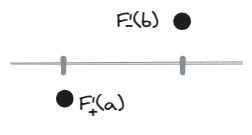

导数极限定理：
若f(x)在x0的邻域内连续，在x0的去心邻域内可导，且导函数在x0处的极限存在，则f′(x0)=x→x0limf′(x).
证明：
由Lagrange中值定理知 ∃ξ∈(x,x0)使得
（左导数） limx→x0−x−x0f(x)−f(x0)=limx→x0−f′(ξ)
设 limx→x0−f′(x)=A（既然它存在）
则有∀ϵ>0, ∃δ>0，当0<x0−x<δ，有 ∣f′(x)−A∣<ϵ
可以找到一个 ξ 使0<x0−ξ<δ，从而 ∣f′(δ)−A∣<ϵ
故limx→x0−f′(ξ)=limx→x0−x−x0f(x)−f(x0)=A
同理可证右导数等于右极限
由于 x0 可导，左右导数相等，故f′(x)=limx→x0f′(x)得证。
导数极限定理
只要导数到某一点的极限存在，它就在此点连续。
达布定理（导数的介值定理）：
f(x)在[a,b]区间可导，则其导函数f’(x)在(a,b)上有介值性。
证明：
不妨设f+′(a)<f−′(b)
即证 ∀μ∈(f+′(a),f−′(b)) ， ∃ξ 使 f′(ξ)=μ。
由题可知 f+′(a)−μ<0<f−′(b)−μ ，于是设原函数 F(x)=f(x)−μx，有 F′(a)<0<F′(b) 。

看图：原函数先下降后上升，所以接下来我们用Fermat定理证明最小值在(a,b)上，再用极值推原函数的导数为0即可。
在点x=a的某个右邻域内，x−aF(x)−F(a)<0，即F(x)<F(a)
在点x=b的某个左邻域内， x−bF(x)−F(b)<0 ，即F(x)<F(b)
故F(a)，F(b)均非最小值，最小值在(a,b)内取到，为极值点，
由Fermat定理得∃ξ 使得F′(ξ)=0 ，则有f′(ξ)=μ 。
我们获得的宝贵经验是，介值性⇏连续性，但是要推出介值性往往需要借助连续性（连续性⇒介值性）。在这里的思路是将其放大，到一个微观的层面，就可以利用Fermat定理等等“沟通导数和函数之间的桥梁”来演绎其中的关系。
另外，将导数和单调性联系起来思考，可以更容易地获得数学直观。